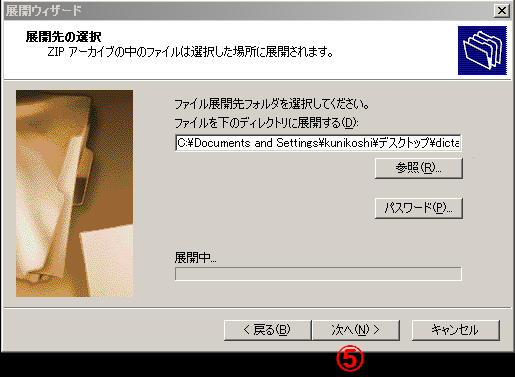

圧縮ファイルの解凍方法
Windows XPの場合
ファイルの上でマウスを右クリックし、[すべて展開]を選択します。展開ウィザードが起動します。
①[次へ]をクリックします。
②「ファイルを下のディレクトリに展開する」で[参照]をクリックします。
③「宛先を選んでください」から、一番上のデスクトップを選択します。
④ [OK]をクリックします。
⑤ [次へ]をクリックします。

⑥ [完了]をクリックします。
これでデスクトップの上に、解凍されたフォルダ（またはファイル）ができました。